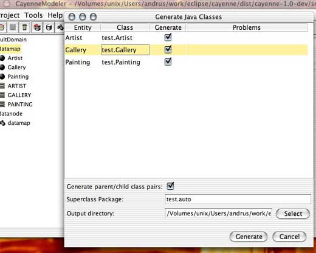

3. Quick Start

3.3 JSP/Struts Tutorial
This is a simple Cayenne web application tutorial. Full tutorial source code is included in
Cayenne distribution in "src/tutorials" folder.
Tutorial steps:
3.3.1 Tutorial Setup
- Make sure you successfully finished common setup steps.
- Install a web container. This tutorial was tested with Tomcat version 4.1.10.
It should work with any other container that is compliant with Servlet 2.3
specification (older containers will also work, but you will not be able
to use some of ServletConfiguration features discussed below).
All references to Tomcat below should apply in some form to other web containers
as well.
- Use tutorial source directory distributed with Cayenne at
$CAYENNE_HOME/src/tutorials/cayenne-web-app
as a project directory.
- Copy cayenne.jar to the WEB-INF/lib subdirectory of
the tutorial project directory.
- Copy JDBC driver jar file to
WEB-INF/lib subdirectory of the tutorial project.
- Install Struts:
- Download Struts from Jakarta Struts site, unpack it
to any convenient directory.
- Copy all JAR files distributed with Struts (located in
lib subdirectory) to
WEB-INF/lib subdirectory of the tutorial project.
- Copy all the *.tld files and validator-rules.xml from Struts
lib subdirectory
to WEB-INF subdirectory of the tutorial project.
Tutorial was testsed with Struts 1.1, other versions of Struts may
require a different setup.
3.3.2 Prepare Tutorial Database
Run tutorialdb.sql
script located in the project directory to create test tables.
This script is tested on MySQL, but it should be easy to port to any other RDBMS. Also
note that if you already tried "Command Line Application" tutorial in
this chapter, you may already have tables with the same names in your database.
In this case you may uncomment "DROP TABLE..." statements in the beginning
of this script to recreate tables from scratch.
3.3.3 Setup Cayenne Configuration Files
Configuration files included in this tutorial are:
Save these files under WEB-INF subdirectory of the tutorial project folder. Open cayenne.xml
file in CayenneModeler and make the following changes:
- if the database used is NOT MySQL,
cayenne.xml
must be modified to use an adapter for the appropriate database.
driverinfo.xml must be modified to reflect connection and
driver information of the test database.

3.3.4 Create Database Primary Key Support.
Open cayenne.xml in CayenneModeler and generate needed database
objects for primary key support by following these
instructions. Skip this step if it was already
done for another tutorial.
3.3.5 Generate Java Code for DataObjects
Open cayenne.xml in CayenneModeler and generate Java classes
for DataObjects by going to "Tools -> Generate Classes"
and selecting the WEB-INF/classes under the tutorial
project directory in the opened popup:

Click "Generate" button. After the generation
is done, the following files should appear in the
WEB-INF/classes/test
3.3.6 Compile and Deploy the Application
Compile the source code like you would normally compile a webapplication.
The example is given for javac from the command line (assuming that JAVA_HOME variable
points to the JDK 1.3 or 1.4 installation). Substitute [servlet.jar]
with the path to the actiual JAR file,
for instance tomcat/common/lib/servlet.jar
On Windows:
cayenne-web-app> cd WEB-INF\classes
classes> set CLASSPATH=%CLASSPATH%;[servlet.jar]
classes> set CLASSPATH=%CLASSPATH%;..\lib\struts.jar;..\lib\cayenne.jar
classes> %JAVA_HOME%\bin\javac webtest\*.java formbean\*.java action\*.java
|
On UNIX:
cayenne-web-app# cd WEB-INF/classes
classes# export CLASSPATH=$CLASSPATH:[servlet.jar]:../lib/struts.jar:../lib/cayenne.jar
classes# $JAVA_HOME/bin/javac webtest/*.java formbean/*.java action/*.java
|
To deploy, simply copy cayenne-web-app directory to Tomcat
webapps directory and restart the Tomcat. URL of the new applications
is http://localhost:8080/cayenne-web-app/
(on containers other then Tomcat, this will be different).
|